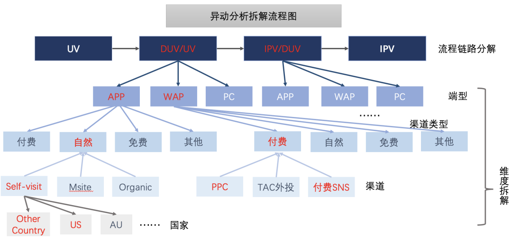

数据分析
Contents
数据分析¶
常见Tradeoff：最大化哪一个：
收益ROI = LT × ARPU / CPA
规模DAU = DNU × LT + RDAU
各赛道指标体系¶
这个模块是适合用思维导图整理的part！用飞书来整理啦：指标体系
Cases¶
现在有一个游戏测试的环节，游戏测试结束后需要根据数据提交一份PPT，这个PPT你会如何安排？包括什么内容？
这里可以套AARRR模型：
获取用户（Acquisition）
提高活跃度（Activation）
提高留存率（Retention）
获取收入（Revenue）
自传播（Refer）
获取：我们的用户是谁？用户规模多大？
a. 用户分层
激活：游戏是否吸引玩家？哪个渠道获取的用户有质量（如次日留存高、首日停留时间长等）？
留存：用户能否持续留存？哪些用户可以留存？
转化：用户的游戏行为如何？能否进行转化？能否持续转化？
自传播：用户是否会向他人推荐该游戏？哪种方式能有效鼓励用户推荐该游戏？传播k因子是否大于1？
某业务部门在上周结束了为期一周的大促，作为业务对口分析师，需要你对活动进行一次评估，你会从哪几方面进行分析?
（1） 确定大促的目的：拉新？促活？清库存？
（2） 根据目的确定核心指标。
（3） 效果评估：
a. 自身比较：活动前与活动中比较
b. 与预定目标比
c. 与同期其它活动比
d. 与往期同类活动比
（4）持续监控：
a. 检查活动后情况，避免透支消费情况发生
b. 如果是拉新等活动，根据后续数据检验这批新客的质量
分析方法¶
异动归因¶
\(Y_{i}\) 的变化导致，也就是属性的变化，比如人群A人均下单量下降
\(P\left(X_{i}\right)\) 变化导致：也就是结构的变化，比如人群A在群体中占比下降
指标横向分层¶
分层
基于核心KPI指标：比如低转化率人群、中等、高转化率人群，知道运营动作要对的人
基于人群特征：年龄职业等，其实这些对购买习惯也有影响
基于场景：比如不同渠道、界面
RFM——对于这些分层方法的一种交叉

指标纵向下钻¶
例子：标签页vv = 视频详情页PV *标签点击率 *标签页 CTR
贡献率计算¶
加法模型：\(Y=X_{1}+X_{2}+X_{3}\)
例子：各个渠道的UV
公式：\(Y=\sum_{i} X_{i} \) 、\( \Delta Y \%=\frac{Y^{1}-Y^{0}}{Y^{0}}\)，贡献等于\(C_{X_{i}}=\frac{X_{i}^{1}-X_{i}^{0}}{Y^{0}}=\frac{\Delta X_{i}}{Y^{0}}\)
反证法证明：\(\Delta Y \%=\frac{Y^{1}-Y^{0}}{Y^{0}}=\frac{\sum_{i} X_{i}^{1}-\sum_{i} X_{i}^{0}}{Y^{0}}=\frac{\sum_{i} X_{i}^{1}-X_{i}^{0}}{Y^{0}}=\frac{\sum_{i} \Delta X_{i}}{Y^{0}}=\sum C_{X_{i}}\)
除法模型： \(Y=X_{1} \cdot X_{2} \cdot X_{3}\)
需要同时关注**「指标变化」和「流量变化」**，比如已知 \(r p m=c p c^{*} c t r\) 下，算出cpc、ctr分别对rpm的贡献
公式：\(C_{X_{i}}=\frac{L\left(Y^{1}, Y^{0}\right) \cdot \ln \left(\frac{X^{1}}{X^{0}}\right)}{Y^{0}}\)
其中，\(Y=\prod_{i} X_{i}\) 平均对数权重\(L\left(Y^{1}, Y^{0}\right)=\frac{Y^{1}-Y^{0}}{\ln \left(Y^{1}\right)-\ln \left(Y^{0}\right)}=\frac{\Delta Y}{\ln \left(Y^{1}\right)-\ln \left(Y^{0}\right)}\)
证明： $\( \Delta Y \%=\frac{Y^{1}-Y^{0}}{Y^{0}}=\frac{\Delta Y \cdot \ln \left(\frac{Y^{1}}{Y^{0}}\right)}{Y^{0} \cdot \ln \left(\frac{Y^{1}}{Y^{0}}\right)}=\frac{\Delta Y \ln \left(\frac{\prod X_{i}^{1}}{\prod X_{i}^{0}}\right)}{Y^{0} \cdot \ln \left(\frac{Y^{1}}{Y^{0}}\right)} \)\( \)\( =\frac{\Delta Y \sum_{i} \ln \left(\frac{X_{i}^{1}}{X_{i}^{0}}\right)}{Y^{0} \cdot \ln \left(\frac{Y^{1}}{Y^{0}}\right)}=\sum_{i} \frac{L\left(Y^{1}, Y^{0}\right)}{Y^{0}} \ln \left(\frac{X_{i}^{1}}{X_{i}^{0}}\right)=\sum_{i} C_{X_{i}} \)$
例子\(ipv=u v \times \frac{d u v}{u v} \times \frac{i p v}{d u v}\)
比率模型：\(Y=\frac{P}{S}=\frac{\sum p_{X_{i}}}{\sum s_{X_{i}}}\) ，\(P_{i}=\frac{p_{X_{i}}}{\sum p_{X_{i}}}, \quad S_{i}=\frac{s_{X_{i}}}{\sum s_{X_{i}}}, \quad Y_{i}=\frac{s_{X_{i}}}{p_{X_{i}}}\)
例：从主页到商品页的转化率 可以分各个不同的渠道
当分析比率指标进行维度下钻，分项对整体的贡献，受两个因素影响
分项的相对数指标波动贡献，即当期与基期的分项规模一致时，分项指标带来的变化
\(A_{X_{i}}=\) 指标同比变化值 * 上期基数占比
分项的结构变化，即当期与基期分项规模变化部分的指标变化
\(B_{X_{i}}=\) 占比同比变化值 * (分项本期指标 - 整体上期指标)
公式: \(C_{X_{i}}=\frac{A_{X_{i}}+B_{X_{i}}}{Y^{0}}\)
\(A_{X_{i}}=\left(Y_{i}^{1}-Y_{i}^{0}\right) \times P_{i}^{0}\) ，其中 \(Y_{i}^{1}\) 是当月的数据， \(Y_{i}^{0}\) 为上个月（同比/环比）的数据。
\(B_{X_{i}}=\left(P_{i}^{1}-P_{i}^{0}\right) \times\left(Y_{i}^{1}-Y^{0}\right)\)
逐层下钻
然而，在全场景里面有不同的下钻维度（比如流量来源、人群归属、是否新老粉、手机端类型等），先拆哪个后拆哪个其实依赖业务理解
红色表示的链路指标或维度代表对总值下跌贡献率较大，经过一层一层的拆解定位到app端自然流量中转化的降低导致总转化下降：
基于流量跨端调控以及流量预算减投的业务背景，我们现将对ipv贡献最大的uv/duv根据端型、流量渠道类型、流量渠道、国家四个维度进行贡献率拆解。
结论一 （第一层拆解）ipv下降主要影响因素是uv-d转化率的波动。
结论二 （第二层拆解）uv-d比率的波动主要由APP端与WAP端导致，两种端型贡献持平。
结论三 （第三/四层拆解）APP端的自然流量和wap端的付费流量是uv-d总比率波动的主要贡献维度。
结论四 （第五层拆解）APP端self-visit中美国对uv-d比率的波动贡献较大。
通过建立多层归因下钻维度模型， 用自动化的方式层层剥析，从而能尽求完善且正确的归因到某个维度
算法归因¶
Adtributor¶
《Adtributor: Revenue Debugging in Advertising Systems》
单维度
组成
EP（explanatory power）是指某个维度下的某个元素的波动占总体波动的比率，可以理解为EP越高，这个维度下的这个元素对于整体北极星的变动贡献幅度最大；
Surprise（基于JS散度引入的指标）是指某个维度下的某个元素的波动的异常性，可以理解为Surprise越高，这个维度下的这个元素发生的指标波动越大。
ImpAPTr决策树维度组合¶
《 Impact Analysis based on Pruning Tree》by美团的《ImpAPTr: A Tool For Identifying The Clues To Online Service Anomalies》，同时作者也把实现代码开源了：https://github.com/wanghaao/ImpAPTr
我们可以无限拆下去，在把不同维度下，每个维值的贡献率求出。
然而颗粒度太细了，有时候在Motivation：ROI作为北极星指标，如果有100下单场景、30个用户来源渠道、10个用户圈层、6个商品等级 4个主要维度的交叉影响，那就总共会产生18万种不同的组合，这个时候就需要多维度的上场了。
某个维度可能是可以组合起来的（比如手机是PC和APP的其实group到一起就行），所以需要得到的是一个一维的、贡献最大（有异动的）的维度维值组合
具体过程
用决策树训练每个最细颗粒度的Y
Pruning掉不重要的冗杂分枝
对叶子结点人群计算贡献率
内外部分析¶
企业内部：分为获客（渠道质量低、活动获取非目标用户）、满足需求（新功能改动引发某类用户不满）、提活手段（签到等提活手段没达成目标、产品自然使用周期低导致上次获得的大量用
企业外部：PEST宏观经济环境分析
Case¶
如果次日用户留存率下降了 5%该怎么分析？
首先采用“两层模型”分析：对用户进行细分，包括新老、渠道、活动、画像等多个维度，然后分别计算每个维度下不同用户的次日留存率。通过这种方法定位到导致留存率下降的用户群体是谁
在内外部
内部：
分为获客（渠道质量低、活动获取非目标用户）、满足需求（新功能改动引发某类用户不满）、提活手段（签到等提活手段没达成目标、产品自然使用周期低导致上次获得的大量用
外部
政治：政策影响
经济：短期内主要是竞争环境，如对竞争对手的活动
社会：舆论压力、用户生活方式变化、消费心理变化、价值观变化等偏好变化
技术：创新解决方案的出现、分销渠道变化等
一个网站销售额变低，你从哪几个方面去考量？
首先要定位到现象真正发生的位置，到底是谁的销售额变低了？这里划分的维度有：
a. 用户（画像、来源地区、新老、渠道等）
b. 产品或栏目
c. 访问时段
定位到发生位置后，进行问题拆解，关注目标群体中哪个指标下降导致网站销售额下降：
a. 销售额=入站流量x下单率x客单价
b. 入站流量 = Σ各来源流量x转化率
c. 下单率 = 页面访问量x转化率
d. 客单价 = 商品数量x商品价格
确定问题源头后，对问题原因进行分析，如采用内外部框架：
a. 内部：网站改版、产品更新、广告投放
b. 外部：用户偏好变化、媒体新闻、经济坏境、竞品行为等
用户流失的分析
两层模型：
细分用户、产品、渠道，看到底是哪里用户流失了。注意由于是用户流失问题，所以这里细分用户时可以细分用户处在生命周期的哪个阶段。
指标拆解：用户流失数量 = 该群体用户数量*流失率。拆解，看是因为到了这个阶段的用户数量多了（比如说大部分用户到了衰退期），还是这个用户群体的流失率比较高
内外部分析：
a. 内部：新手上手难度大、收费不合理、产品服务出现重大问题、活动质量低、缺少留存手段、用户参与度低等
b. 外部：市场、竞争对手、社会环境、节假日等
（2）新用户流失和老用户流失有什么不同：
新用户流失：原因可能有非目标用户（刚性流失）、产品不满足需求（自然流失）、产品难以上手（受挫流失）和竞争产品影响（市场流失）。
新用户要考虑如何在较少的数据支撑下做流失用户识别，提前防止用户流失，并如何对有效的新用户进行挽回。
老用户流失：原因可能有到达用户生命周期衰退期（自然流失）、过度拉升arpu导致低端用户驱逐（刚性流失）、社交蒸发难以满足前期用户需求（受挫流失）和竞争产品影响（市场流失）。
老用户有较多的数据，更容易进行流失用户识别，做好防止用户流失更重要。当用户流失后，要考虑用户生命周期剩余价值，是否需要进行挽回。
参考@王玮 的回答：如何进行用户流失原因调研？2100 关注 · 19 回答问题
我们有一款游戏收入下降了，你怎么分析。
两层模型：细分用户、渠道、产品，看到底是哪里的收入下降了
指标拆解：收入 = 玩家数量 * 活跃占比 * 付费转化率 * 付费次数 * 客单价
进一步细分，如玩家数量 = 老玩家数量 * 活跃度 + 新玩家数量 * 留存率等。然后对各个指标与以往的数据进行对比，发现哪些环节导致收入下降
原因分析：
a. 内部：产品变化、促活活动、拉新活动、定价策略、运营策略、服务器故障等
b. 外部：用户偏好变化、市场环境变化、舆论环境变化、竞争对手行为、外部渠道变化等
如何提高：基于乘法模型，可以采用上限分析，从前往后依次将指标提升到投入足够精力（假设优先分配人力、经费与渠道）后的上限，然后分析“收入”指标的数值提升。找到数值提升最快的那个阶段，就是我们提高收入的关键任务
抖音日活下降了10%
拆分维度
计算贡献率
对每个问题形成假设
内部：
外部：PEST
验证假设
费米问题¶
费米估算指的是解决未知结果的估算问题，将复杂的问题拆解成小的、可知结果的部分。 将拆解出来的简单部分赋予实际意义，如果还不能得出结果，那就继续再拆解，直到拆解后的所有部分问题变成一个常识问题或者是比较容易解决的，从而将一个未知结果的问题逐步变得清晰。
回答费米问题, 可以用逻辑树分析方法。对问题按照不重不漏（MECE，Mutually Exclusive Collectively Exhausted）的原则进行拆解，将问题层层拆解成子问题
【芝加哥有多少钢琴调音师】
需求侧：芝加哥有多少居民？可靠的估算是300万；平均每个家庭有多少人？4人；多少家庭有钢琴？大概三分之一，那么全市大约就有25万架钢琴；
供给侧：一架钢琴隔多长时间需要调音？平均5年，那么芝加哥平均每年有5万架次的钢琴需要调音；每个调音师每天能为多少架钢琴调音？4架；假设他一年工作250天，那么他每年约为1000架钢琴调音
供给=需求⇒费米和学生们推测，芝加哥市大概有50位钢琴调音师。
【案例深圳有多少产品经理?】
深圳有多少家互联网公司 (可以通过招聘网站的公司数量查到)｜每家公司大概产品经理占总人数 的占比。
深圳的产品经理数=公司数量 \(*\) 平均每家公司产品经理占比。
【杭州每年奶茶店的规模大小】
需求端：杭州常住人口×渗透率×饮品单价×每人每周续购杯数×周数
杭州常住人口为1000万
不同年龄段的人喝奶茶的频率是不一样的。根据生活经验，年轻人喝奶茶次数会比中年人喝老年人高，所以我们可以通过MECE法则将杭州常住人口分为小孩、年轻人、中年人和老年人，计算公式依然没有变，最终相加各类型的规模大小即可。
假设渗透率小孩10%、年轻人40%、中年人30%、老年人5%
从而得到一个喝奶茶的人口
饮品单价：根据我们的生活常识，蜜雪冰城的奶茶均价8元，喜茶的奶茶均价在30元一杯。所以饮品单价我们可取15元一杯
每人每周续购杯数：也按小孩、年轻人、中年人、老年人加权平均
52周
供给端：杭州一家奶茶店一天卖出奶茶杯数=工作时长一窗口每小时卖出多少杯售卖窗口
工作时长：早上9点到晚上9点，一共12小时，已知数。
一窗口每小时卖出多少杯：以天为单位，存在高峰和低峰期。根据生活经验，估算高峰期为12-14点和18-21点，低峰期为9-12点和14-18点。同时根据生活经验，制作一杯奶茶需要3分钟，高峰期一窗口每小时卖出15杯，低峰期一窗口每小时卖出5杯。
售卖窗口：预估一个奶茶店有售卖窗口（制作机器）有3个。
作者：牛哥zhuang 链接：https://www.nowcoder.com/discuss/831026?&channel=-1&source_id=community_index_nctrack) 来源：牛客网
ce_id=profile_create_nctrack&channel=-1)**
字节跳动（抖音，中台和小荷）面试心得：字节跳动 小荷+用户增长+抖音 数据分析实习生面经！_笔经面经_牛客网 (nowcoder.com)
*互联网大厂**（百度+京东+滴滴）*面试心得：滴滴+京东+百度+腾讯！全Offer！数据分析实习面经_笔经面经_牛客网 (nowcoder.com)
【深圳有多少量出租车】
需求侧：花费总额 = 深圳人口*每人每月平均花费在打车上的费用
需求侧：花费总额 = 出租车数量*出租车司机月收入
出租车司机月收入可以估4000-8000
出租车数量求出上面的就可以得出来啦～
数据可视化¶
基础概念¶
Exploratory Data Analysis (EDA) is an approach of analyzing datasets to summarize their main characteristics, often using statistical graphics and other data visualization methods
缺失、imbalanced、feature、sample size、distribution、skews等等
Data types¶
Quantitative/numerical continuous- 1, 3.5, 100, 10^10, 3.14Quantitative/numerical discrete- 1, 2, 3, 4Qualitative/categorical unordered- cat, dog, whaleQualitative/categorical ordered- good, better, bestDate or time- 09/15/2021, Jan 8th 2020 15:00:00Text- The quick brown fox jumps over the lazy dog
Aesthetics¶
a quantifiable set of features that are mapped to the data in a graphic.
Describe every aspect of a given graphical element.
-20220724150704920.(null))
Scales¶
mapping between data values and aesthetic values：比如什么样的数字代表圆形、什么样的数值代表x轴的位置
-20220724150701851.(null))
Position scale
Cartesian coordinate system 笛卡尔坐标
Log transform需要注意x轴标签的问题
场景：如果linear的话 无法capture所有的信息

Color scale
distinguish groups of data
Represent data values （sequential color scale）
Tool to highlight
Visualization Collections¶
Amount
Barplot：Unordered category的时候要rank！
Grouped & Stacked barplot
Dotplot
Distributions
Histogram
Kernel Density： 多类别的时候kernel density plots work better than histograms
Boxplot
Violinplot
Ridgelineplot
Proportions
Pie charts
Stacked bars
Side-by-side bars
XY relationships¶
Scatterplots
Bubble plots
Scatterplot matrix
Correlation coefficient
Correlogram
Uncertainty¶
Probability distribution

数据解决方案¶
打分模型¶
将各个维度的指标分别以北极星指标为目标训练DNN得到score后weighted sum例子：
Y：是否成功push
活跃: 7天活跃天数，30天活跃天数，90天活跃天数，7天内活跃状态，30天活跃状态， 30天有效播放总时长
兴趣：6大品类topic 标签，6大品类播放时长占比，top 20 播放cid
商业价值：性别、年龄、学历、城市、城市等级、有房状态、有车状态、是否是会员、手机品牌&价格&型号
转化机会：7天接收\点击push数、30天接收\点击数
⇒营销价值总得分
用户流失预警体系¶
其实是一个by预测窗口（比如一周）的分类模型
Step 1. 搜集、分析用户历史数据表现，包括登陆频次、登陆时长、浏览时长、浏览深度、跳出率、下单频次等用户行为数据确定一个观察窗口，观察窗口期内可以通过流失定义来确定一批已知流失用户。
Step 2. 其次建立一个表现窗口，通过建立用户大数据模型来分析已知流失用户画像特征、消费行为特征、用户生命周期特征来建立流失规则集，并不断优化模型提升预测的覆盖率和命中率。
Step 3. 在预测窗口，在未来几周或几个月内，通过模型对尚未明确流失的用户进行预测，并建立流失评分体系，通过评分规则打上相应流失标签，比如：高风险流失用户、中风险流失用户、低风险流失用户。
模型选择
cox生存模型：这个模型算法最大的作用是可以分析各个用户变量与流失的关系，并通过生存算法预测出不同用户在未来流失概率。
在survival function里面找突然下降的点
决策树模型：可以提供不同流失的规则集，用户运营可以通过流失规则快速分层用户并进行运营。
神经网络模型：可以计算每个用户的流失评分，用户运营可以根据评分高低来确定不同流失风险用户的运营策略。
用户分层¶
用户生命周期
可以根据流失/活跃 × 新用户/老玩家/高级玩家分
RFM¶
有三个神奇的要素，通过这三个要素的有机结合可以帮助我们更为客观、全面地看待用户价值：
R：最近一次消费时间(Recency)
F：消费频率(Frequency)
M：消费金额(Monetary)
除了根据产品实际情况拍板决定之外，这里有两种常用的统计学方法：一种是中位数法，另一种是基于聚类的数据挖掘方法。在实践过程中，两种方法各有优劣，可以根据产品需要和目标择优处理：
1、中位数：以R、F、M三个指标的中位数作为临界点。优势是可解释性强，分类结果直观易懂，劣势是受样本本身的分布影响较大，对于严重倾斜的样本往往效果不佳；
2、聚类：通过聚类算法，计算各个样本之间R、F、M三个指标的距离，将用户进行分群。优势把更多具有相同消费习惯的用户聚在一起，分类的数量可以根据产品需要适当进行调整，但劣势是聚类结果的可解释性不强，往往无法直接按RFM标准矩阵来定义用户群体。
除了中位数之外，也可以结合产品实际情况及数据分析做进一步的细分与优化如：
R：最后一次消费时间：活跃期（1-3天）；沉默期（4-7天）；睡眠期（8-14天）；流失期（>14天）
F：消费总次数：新用户（1次）；老用户（2-6次）；成熟用户（7-15次）；忠实用户（>15次）
M：消费总金额：低贡献（1-9元）；中低贡献（10-49元）；中高贡献（50-99元）；高贡献（>100元）